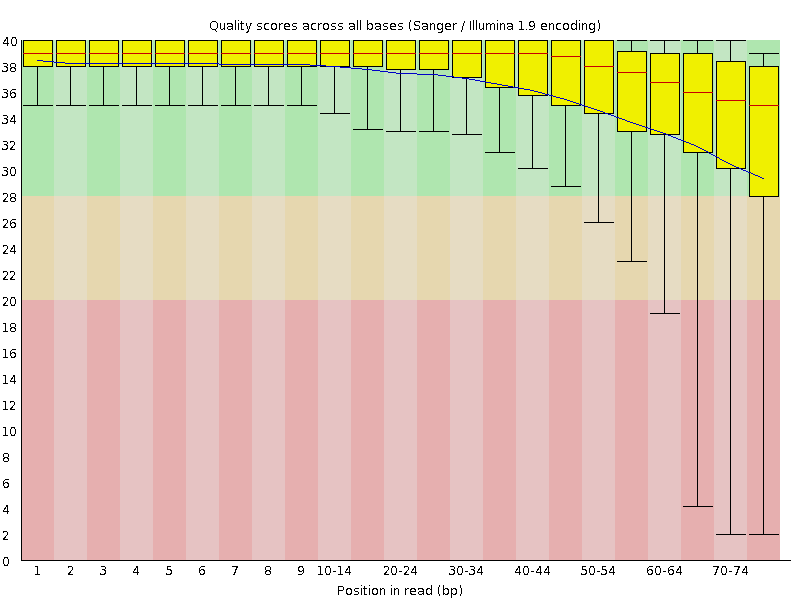
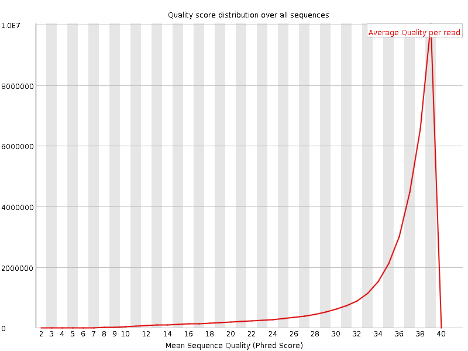
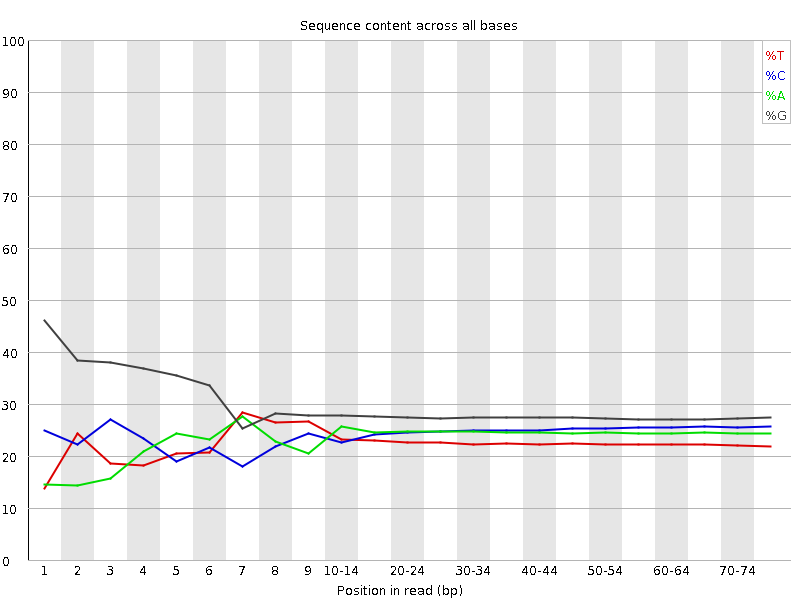
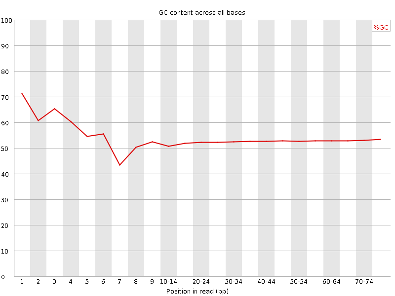
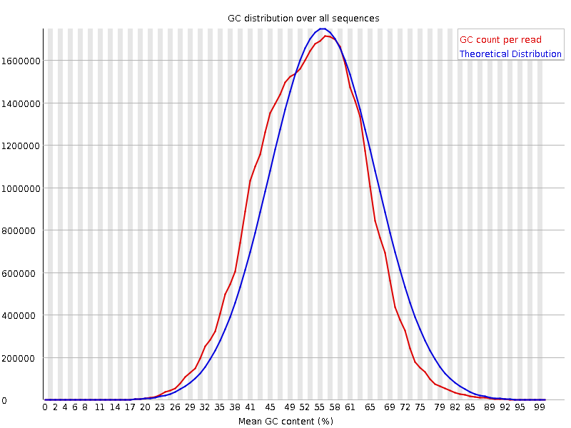
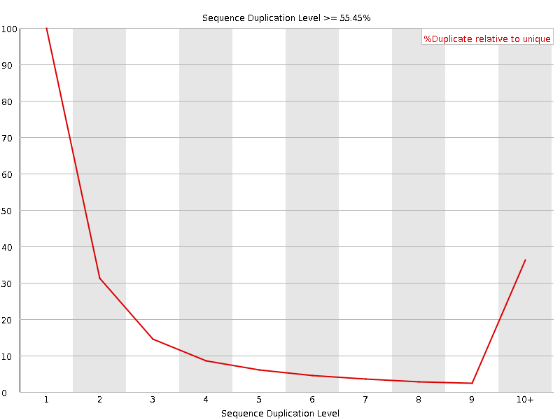
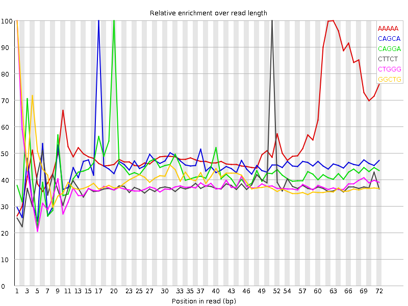

![[OK]](Icons/tick.png) Basic Statistics
Basic Statistics
| Measure | Value |
|---|---|
| Filename | SRR315300_1.fastq |
| File type | Conventional base calls |
| Encoding | Sanger / Illumina 1.9 |
| Total Sequences | 35675086 |
| Filtered Sequences | 0 |
| Sequence length | 76 |
| %GC | 53 |
Per base sequence quality

Per sequence quality scores

![[FAIL]](Icons/error.png) Per base sequence content
Per base sequence content

Per base GC content

![[WARN]](Icons/warning.png) Per sequence GC content
Per sequence GC content

Per base N content

Sequence Length Distribution

Sequence Duplication Levels

Overrepresented sequences
| Sequence | Count | Percentage | Possible Source |
|---|---|---|---|
| GATCGGAAGAGCGGTTCAGCAGGAATGCCGAGACCGATATCGTATGCCGT | 63486 | 0.1779561232171942 | Illumina Paired End PCR Primer 2 (98% over 50bp) |
Kmer Content

| Sequence | Count | Obs/Exp Overall | Obs/Exp Max | Max Obs/Exp Position |
|---|---|---|---|---|
| AAAAA | 6844210 | 3.1639442 | 5.8882985 | 63 |
| CAGCA | 7118210 | 2.6956818 | 6.0041003 | 17 |
| CAGGA | 7342010 | 2.43541 | 5.625142 | 20 |
| CTTCT | 4312560 | 2.3764343 | 6.2844324 | 51 |
| CTGGG | 7627875 | 2.3324838 | 6.1667204 | 1 |
| GGCTG | 7346050 | 2.2463062 | 5.5672317 | 1 |
| GGCAG | 7613395 | 2.163245 | 6.472548 | 1 |
| TCTTC | 3888310 | 2.1426516 | 6.040878 | 50 |
| GCTGG | 6951495 | 2.1256573 | 5.0818944 | 1 |
| AGCAG | 6298940 | 2.0894141 | 5.2105227 | 18 |
| GGAGG | 8321305 | 2.0709903 | 5.285796 | 2 |
| AGGAA | 5483105 | 1.8598273 | 5.027996 | 21 |
| GGAAG | 6327335 | 1.838388 | 5.702827 | 5 |
| GGGAG | 7323975 | 1.8227767 | 6.4516954 | 1 |
| TCAGC | 4278255 | 1.7436215 | 5.43314 | 16 |
| GGGCA | 6038795 | 1.7158434 | 5.288385 | 1 |
| TGGGG | 6275160 | 1.6807345 | 5.270719 | 2 |
| TTCAG | 3705335 | 1.6618418 | 5.7114706 | 15 |
| GAAGA | 4871280 | 1.652301 | 5.753331 | 6 |
| GGGGG | 7097285 | 1.5130357 | 7.085634 | 1 |
| GTGGG | 5489840 | 1.470395 | 8.091677 | 1 |
| GGGGA | 5843905 | 1.4544197 | 7.36904 | 1 |
| AAGAG | 4224035 | 1.4327604 | 5.268643 | 7 |
| GTTCA | 3008310 | 1.3492264 | 5.412004 | 14 |
| GGGGT | 4629490 | 1.2399594 | 5.64678 | 1 |
| GTGGA | 3670520 | 1.1477087 | 5.4126644 | 1 |
| CGGGG | 3454850 | 0.84086597 | 5.297032 | 1 |